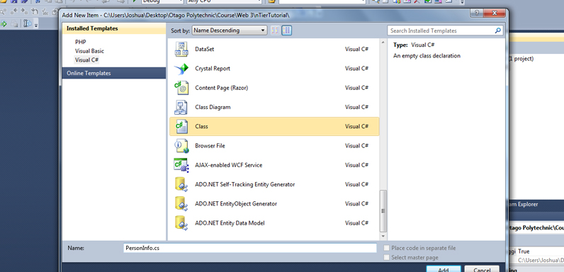
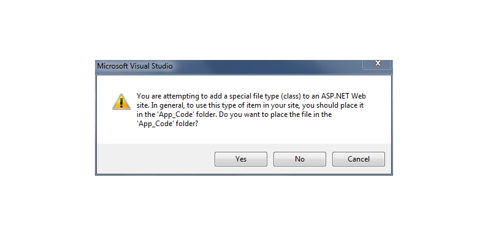
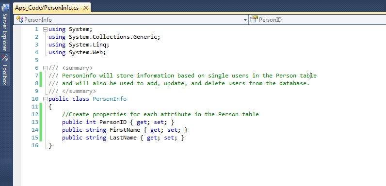
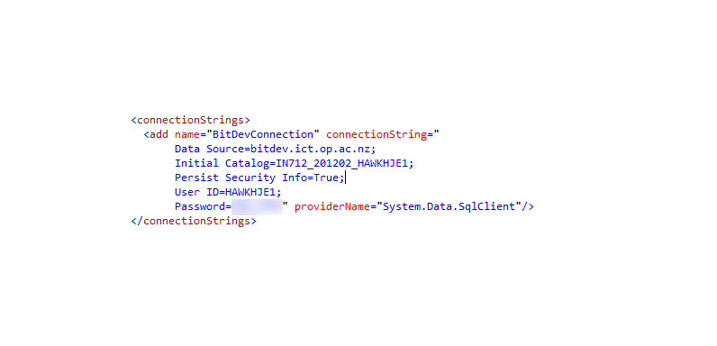
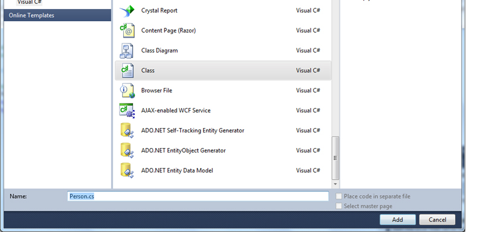

- Add a class called PersonInfo - this will hold values that we get from the database
 - When the dialog shows click Yes to create the App_Code folder for your classes
 - For each attribute in your table create a property for that attribute, as shown in the example below
 - create a new class called Person, this class will control the person table {code}
- Modify your web.config file and add your connection string

